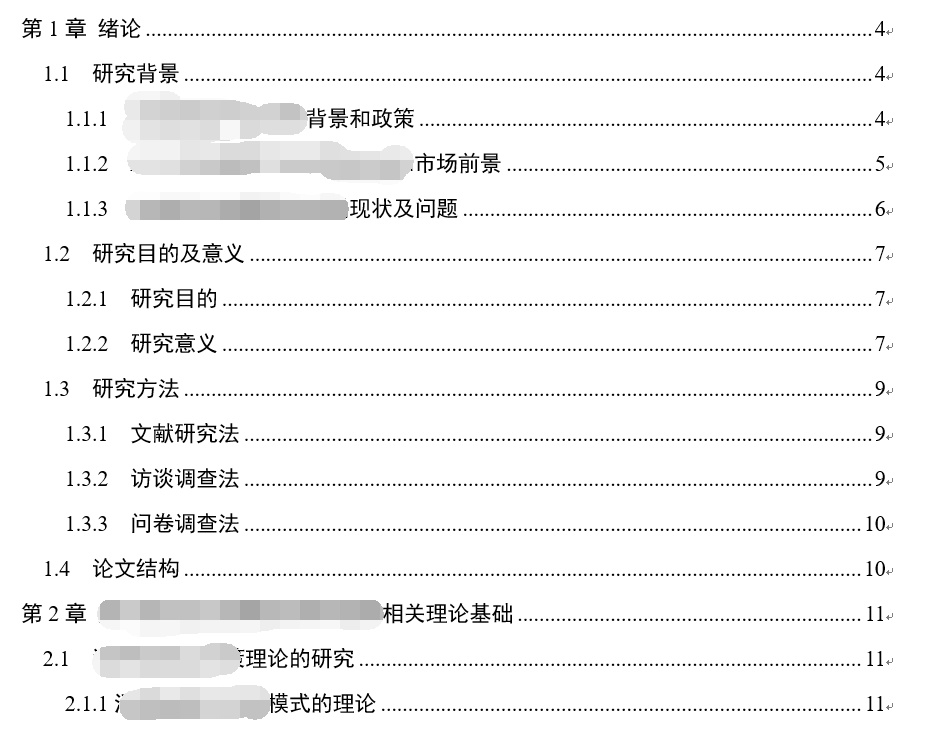

如何写好一篇毕业论文？
不管你是本科还是研究生，不管是文科商科还是理工科，毕业论文都有着相对固定的结构。
毕业论文一般分为5-6个章节。（根据每个学校或学科的要求可能有些差异，但万变不离其宗，基本都是这个结构）
第一章：绪论
第二章：理论基础（或文献综述）
第三章：研究假设
第四章：论证过程
第五章：研究结论
第六章：研究不足与展望
虽然每个学科的标题和内容不完全一样，但大体都是这个思路，并且这几个章节环环相扣，每一章都需要有前一章的佐证

第一章：绪论
第一章一般包含几个二级标题：分别为：研究背景、研究目的和意义、研究方法、论文结构等……
一听标题你就应该知道，这一部分基本都是空话套话，主要讲的是研究背景和目的，你既然选了这个选题，这些内容闭着眼都能写出来，建议先做到脑中有个初步思路即可，不用着急写，建议放在论文的最后时间来写。
（我不建议论文按照章节顺序来写，比如绪论部分就可以放在偏后的位置。）
作者：厦门市华文图书有限公司
第二章：理论基础（或叫文献综述）
这部分相对还是比较重要的，因为写论文与写其他文章最大的不同就是你的每一句观点和结论都必须有出处——要么通过你自己的实验论证，要么需要有前人的研究成果作为支持。因此这一部分的内容相当于盖楼的地基。
但从另一个角度说，这一部分正因为是前人研究基础，很大一部分内容都是引用文献，基本上初稿都不用自己写的，所以也不用花太多时间，最后降重即可。严格意义上说，必须是先有了理论基础才能往下一步进行的，但今天如果需要按常理出牌，我就不用来写回答了。既然说的是以毕业为目的完成论文，我给的技巧是：这一步可以放在核心部分之后写。（第二步中我会详细介绍写作顺序）。
这里插一句引用文献，关于引用格式可以参考每个学校的引文标注规范。可以边写边标注，也可以写完再统一标注，我是后者。
第三章：提出研究假设。
它和第四章是全文写作的核心！请注意我说的是写作的核心，并非答辩和整个论文的核心（整个论文的核心一般是第三章和第五章），但是对于写论文来说，这两个章节是我建议必须最先完成的。因为学科不同，这两个章节的差异较大，但是总的方向一致。我就拿我自己的论文（社会学类）举例吧。
我的第三章内容是实证分析，包含的二级标题是：访谈调研、研究假设与模型的建立、问卷设计与数据收集。
简而言之第三章一般是在第二章的理论基础上，论述你提出了怎样的研究假设。也是你整篇文论的核心观点。
第四章：论证过程。
一般是在第三章提出研究假设的基础上，对收集来的数据进行分析的过程，以验证你的假设是否成立。这个部分一般在需要花的时间一般比较长（但并非写作时间，而是研究的时间），因为会有计算或者研究的过程。（而且如果做出来验证结果有问题，还得反复重新做）
第五章：研究结论。
这一部分其实在整个论文中是极为非常重要的，尤其是应用类的学科。因为他不仅阐述你的研究过程得出了怎样的结论，你在第三章中提的假设到底哪些成立哪些不成立？而且关系到你的研究成果或论文的成果到底有什么意义，有没有实用价值。
请记住：在论文写作时，第五章研究结论是重点，但不是难点。
为什么这么说？因为只要你第三章和第四章搞定了，第五章的研究结论就是顺理成章的事情，基本上可以一气呵成文思泉涌。但如果第三章和第四章裹足不前，或出现种种错误，那第五章也不要想写的顺利进行。因此再次强调：第三章和第四章才是写作的重难点。
第六章就更为简单了：研究不足与展望。
这一部分个人认为无关紧要，因为每一篇论文都不是完美的，当你写作的时候你一定能找出一万个缺陷，所以最后自我批评的时候挑几个不那么原则性的问题说一说，比如：调研对象范围不够广，理论模型可以再细化等等……希望后人可以继续研究等简单展望一下。这里可以参考借鉴一下别人的文献都是怎样自我批评和展望的，基本上都是一个套路。